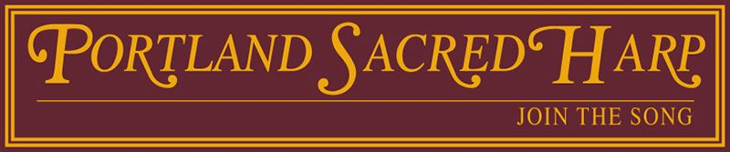

|  |
|
Shape note singing is one of America’s oldest musical and social gathering activities. All are welcome to sing, regardless of experience or ability. Portland Sacred Harp events do not have any membership requirements or religious or political affiliations. Come as you are and sing for yourself! Learn more |
CALENDAR |
Regular SingingWe've resumed almost-weekly singing. Vaccination is required, but masks are optional except in the public areas of the building(s)
|
Upcoming Special Events
|
LISTENChina |
Eternal Day |
|
More videos and audio recordings. |
LEARN ABOUT THE TRADITIONWatch the OPB feature, practice singing online, and visit fasola.org. |
PRESS“It was a strange sound, raw and wild and hoary, yet at the same time, familiar somehow – a great, aching lamentation that stopped people walking by in the hallway outside cold.It was as if voices from a previous century had started speaking again.”The Oregonian “…six times better than a night at Chopsticks,” “way more raw and rustic than gospel,” and a “mind-bogglingly beautiful music style.”The Portland Mercury “‘…penetrating sound that gets under your skin…that primal scream of music that is Sacred Harp singing at its best.”The Willamette Week |
CONTACT USFind Portland Sacred Harp on Facebook or write to Ana Tighe. |
OH, AND DID WE MENTION THE FOOD?Our potlucks were praised in The Oregonian’s “Food Day”: Read the short and sweet article. |
RESOURCESHere’s a list of local resources
Longer list about everything sacred harp |